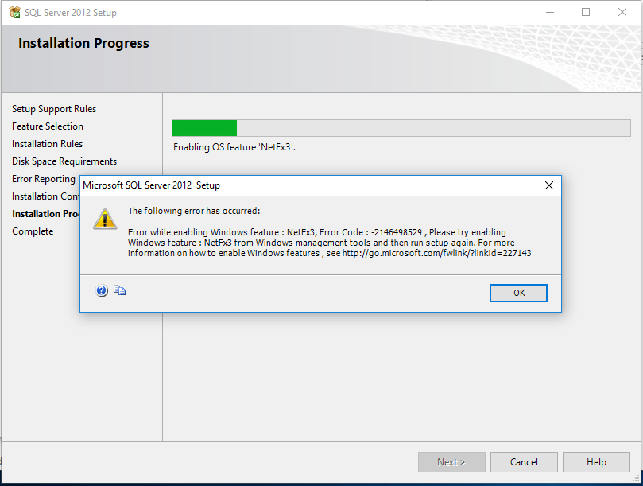
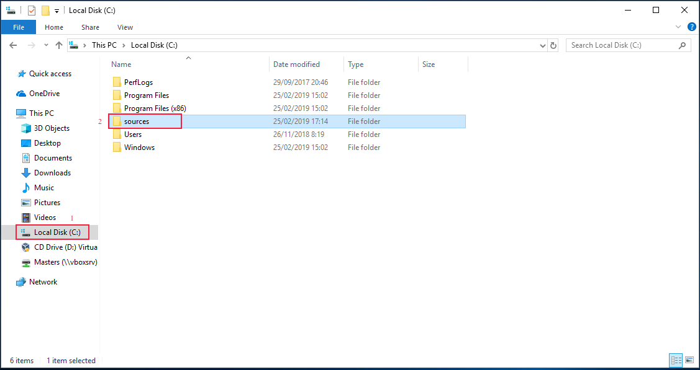
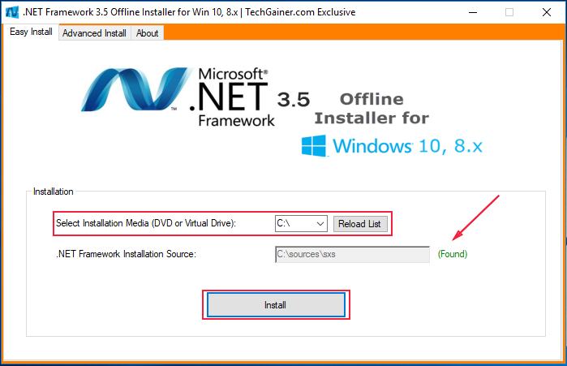
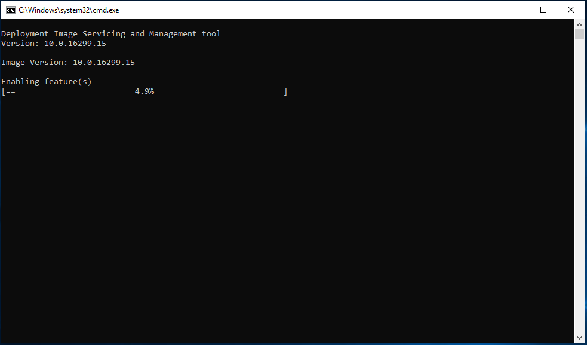
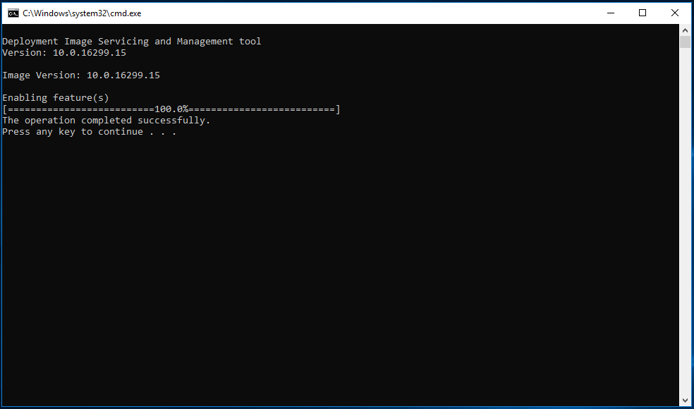
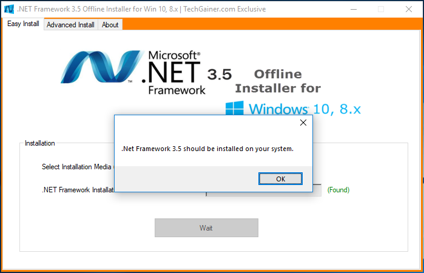

Instalasi Software Pendukung Windows 10
Langkah menginstall Software Pendukung OtomaX untuk Windows 10 adalah sebagai berikut:
Install Microsoft SQL Server Express
Pertama, install Microsoft SQL Server Express sebagai berikut:
- Cari file Microsoft SQL Server Express yang sudah Anda download. Jika belum download silahkan download dahulu disini.
- Klik 2x pada file Microsoft SQL Server Express, dan kemudian klik New SQL Server stand-alone installation
or add features to an existing installation:

- Centang CheckBox I accept the license terms, dan kemudian klik Next.


- Klik Next.


- Klik Next.

- Klik Next.

- Klik Next.

- Klik Next.

- Klik Next.


- Install sukses, klik Close.

- Klik icon close.

Install Microsoft SQL Server Management Studio Express
Kedua, install Microsoft SQL Server Management Studio Express sebagai berikut:
- Cari file Microsoft SQL Server Management Studio Express yang sudah Anda download. Jika belum download silahkan download dahulu disini.
- Klik 2x file Microsoft SQL Server Management Studio Express.

- Klik New SQL Server stand-alone installation or add features to an existing installation:


- Klik Next.

- Klik Next.

- Centang CheckBox I accept the license terms, dan kemudian klik Next.

- Klik Next.

- Klik Next.


- Install sukses, klik Close.

- Klik icon close.

Selesai
Selanjutnya install Sotware OtomaX Free Edition, selengkapnya klik disini.
Catatan: Tata cara di atas berlaku untuk Windows 10 32 bit maupun 64 bit.
Trobleshotting

Apabila saat menginstall Microsoft SQL Server Management Studio Express muncul pop up seperti gambar diatas, lakukan hal berikut:
- Download NET Framework 3.5 Offline Installer for Win 10, 8.x klik disini.
-
Extract file yang baru di download, lalu copy folder sources hasil extract dan paste di Local Disk
(C:) komputer Anda. Perhatikan gambar dibawah ini:

-
Jalankan NET-Framework-3.5-Offline-Installer-v2.3 dan pada Select Installation Media (DVD or Virtual
Drive) pilih C:\, kemudian klik tombol Install.

Akan muncul tampilan seperti di bawah ini, silahkan ditunggu hingga selesai

-
Ketika muncul tampilan seperti dibawah ini, klik tombol Enter pada keyboard Komputer.

Klik OK.

- Selesai.
Selanjutnya install kembali Microsoft SQL Server Management Studio Express sesuai panduan diatas.